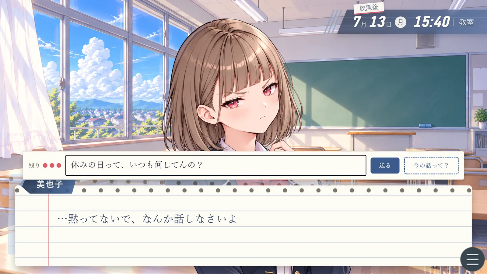

みんなの人気者。でも、あと一歩が遠い。
花芽 瑞希
「悠斗くんは何してるの？たしか部活は入ってなかったよね？」
生徒会の副会長で、テニス部のエース。成績も学年トップクラス。誰にでも優しく、みんなの人気者。あなたとは仲が良いけれど、あと一歩が進まない関係。
- 誕生日
- 3月3日
- 血液型
- A型
- 身長
- 158cm
- 好きなもの
- いちご大福（特に）、映画（一番は恋愛もの）

ダウンロード会話に、選択肢なんてない。
だから返事は、君の言葉で。
会話の意味を読み取る、AIを内蔵。
3人のヒロインと「自由に話して」仲良くなる恋愛アドベンチャー。
——夏祭りまで、あと6日。君は誰と仲良くなる？
Windows 10／11 ・ 無料
7月某日 放課後
毎年、夏に大きな夏祭りが開かれる町・葉月町。
そこに住むあなた。高校2年の夏。いつも通りの日常。
親友の拓海が言った。
「土曜の夜は夏祭りだろ。今年こそ、誰か誘えよな」
去年と一昨年も夏祭りは、拓海と二人だった。
今年は、今年こそは誰かと行こうと決めたのだった。
夏祭りまで、あと6日——
学校終わりの放課後。誰と会い、何を話すか？
そして、土曜日の夏祭りの夜を誰と過ごすのか？
それは全てあなた次第です。

このゲームの普段の会話には、
選択肢がありません。
会話フェーズと呼ばれるモードの時、ヒロインへの返事は、自由に書いて送ります。ヒロインは、その言葉に合わせて返してくれます。ほめる・からかう・冗談・謝る・頼みごと・さまざまな言葉に、それぞれの反応が。
同じ相手でも、何をどう話すかで返答も反応も変わります。
実際のゲームの中のやりとりです
同じ会話の中で話したことを覚えていて、「さっき〜って言ってたよね」と話をつなげます。答えが変わると「あれ？さっきは…」とつっこまれることも。
何を話せばいいか分からないときは、主人公の心の声でヒントが出ます。
学校や町から行き先を選びます。誰がどこにいるかは、行ってみないと分かりません。
ヒロインからメッセージが届きます。返事を選んで送ることも。
6日目の夜は夏祭り。それまでに仲を深めましょう。
1周じゃ、見きれない。
周回推奨誰に会いに行くか、何を話すかで、見られる場面もエンディングも変わります。
1プレイ、約１時間程度で終わります。気に入ったら2周目も遊んでみてください。
何度でも遊べるように、色々用意しました。
ぜんぶ見るまで、何周かかる？
みんなの人気者。でも、あと一歩が遠い。
「悠斗くんは何してるの？たしか部活は入ってなかったよね？」
生徒会の副会長で、テニス部のエース。成績も学年トップクラス。誰にでも優しく、みんなの人気者。あなたとは仲が良いけれど、あと一歩が進まない関係。
口は悪い。でも、根はいい子。
「…え、アンタもコーヒー好きなの？…ふーん。…今度、淹れてあげてもいいけど」
主人公の後ろの席のクラスメイト。駅前の「喫茶ひだまり」で、高1の春からバイトしている。あなたに対してすぐ突っかかってくるけれど、根はいい子。
顔を合わせれば、言い合いになる。
「……ごきげんよう。あなたが花屋に？何かの間違いかしら」
橘グループのお嬢様。華道とバイオリンの稽古を毎日している。取り巻きは多いけれど、本人はいつも一人。あなたとは、顔を合わせるたびに言い合いになる仲。
自称・恋愛マスターの親友。
「土曜の夜は夏祭りだろ。今年こそ、誰か誘えよな」
あなたの親友。自称「恋愛マスター」（ただし、うまくいった話は聞いたことがない）。遊び方の助言や、ヒロインがどこにいるかの「うわさ」を教えてくれる。
主人公（名前は自由に決められます） 高校2年。一人称は「俺」。去年の夏祭りは、拓海と二人だった。
本ゲームに対する、実況・配信・動画の投稿は、自由です。
返事は自由入力なので、視聴者さんに返事を考えてもらう遊び方もおすすめです。
Mac・スマートフォンでは遊べません。
本作の立ち絵・背景・スチルCG・タイトル画面・ロゴは、画像生成AIを利用して制作しています。台本・セリフの多くは、文章のAI（Claude）が下書きしたものを、作者が確認・修正して使っています。
また、プレイヤーの入力した文章を読み取るために、言語のAI（Ruri v3 30m）をゲームの中で使っています。入力した文章が、パソコンの外に送られることはありません。